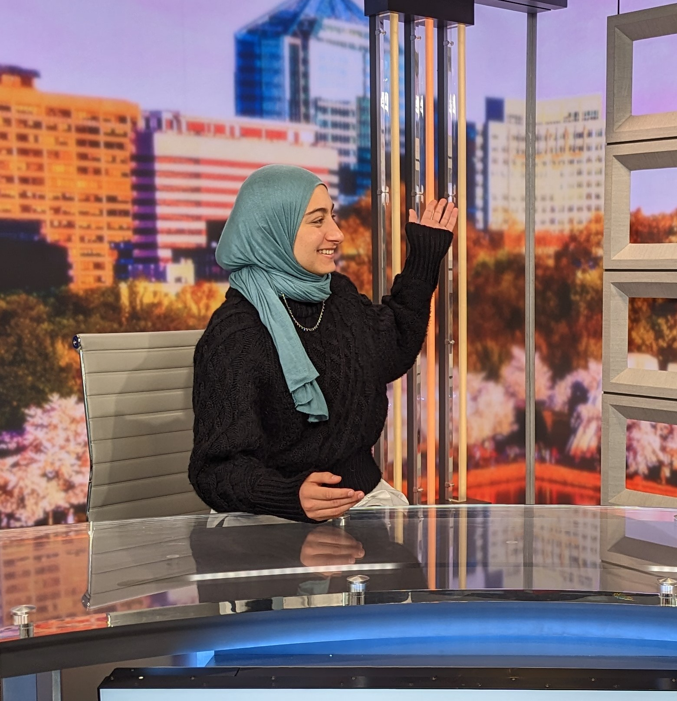

Student Journalist
I am responsible for pitching and writing one story a week. My beat is graduate student life and the Graduate Student Government, and I work to stay in contact with those sources, build connections and write about the issues most affecting this group of students. I am also responsible for picking up blogs when they come up and writing concise stories that are published within a few hours. During the midterm elections in 2022, I talked to voters at the polls about what issues were important to them in that election cycle.
I worked two night shifts a week where I fact-checked numerous stories using online research, interview recordings and looking through news archives. I also worked to ensure stories lacked grammatical errors and AP style issues. Through this job, I was able to establish working relationships with reporters, and I learned how to work alongside them to produce the best work for the paper.
I served clients through some of the busiest days of the year, including the Fourth of July. Through this job, I learned how to maintain a calm yet diligent attitude amid stressful situations. I also practiced communicating and building a relationship with a wide array of people in a friendly and helpful manner. I worked as a team member by doing my part in finishing orders and keeping the store organized, while also assisting my coworkers whenever needed.